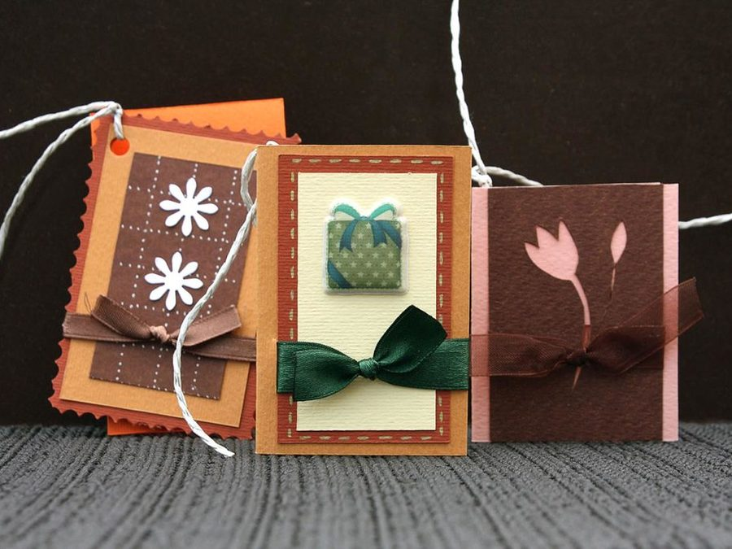

Живой разговор
Разные фактуры, свободный ритм и неожиданные соседства.
Садовый букет ↗Начните не с количества цветов. Начните с чувства.
Спасибо, что ты рядом.
Пион / ваша открыткаТекст открытки сохраняется в этом браузере. Форму и состав букета можно подобрать в мастерской ниже.

Вспомните маленькую деталь: совместную прогулку, любимую песню, утро после долгой встречи. Она скажет больше, чем готовое пожелание.
Разные фактуры, свободный ритм и неожиданные соседства.
Садовый букет ↗
Один главный цветок, мягкий объём и спокойная палитра.
Композиция с пионами ↗
Сдержанная форма, чистый силуэт и внимание к каждой детали.
Монобукет роз ↗Обновите срез стеблей и уберите листья, которые окажутся в воде.
Проверяйте уровень воды и чистоту вазы. Следуйте памятке флориста для выбранных цветов.
Поставьте цветы вдали от батареи, прямого солнца и миски с фруктами.
Выбирайте детали, вращайте модель и сохраняйте свой дизайн, оставаясь на этой странице.
Выберите настроение в начале страницы, напишите свои слова и перейдите к встроенной мастерской. Выбор букета передаётся в конструктор; текст открытки сохраняется в этом браузере.
Да. В мастерской можно выбрать цветы, количество, зелень и доступную упаковку, а затем рассмотреть композицию.
Этот сайт демонстрирует подбор и сохранение дизайна. Реальная доставка и оплата не подключены.